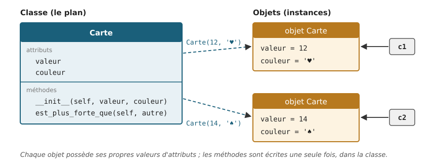
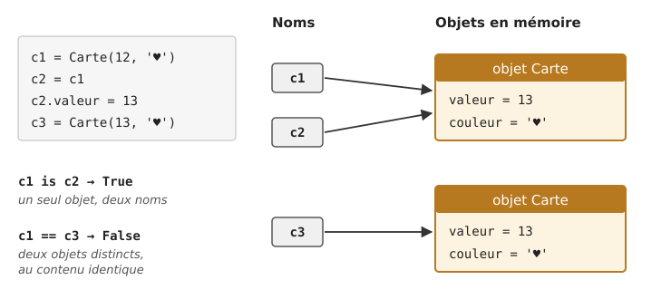
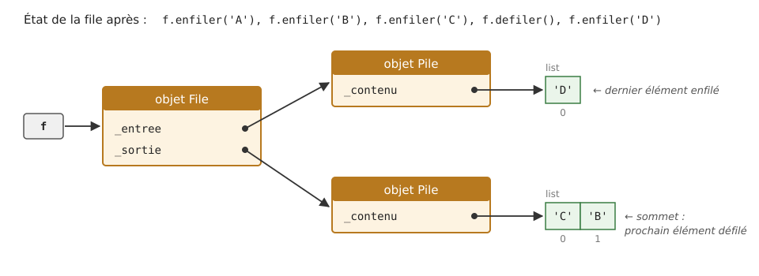
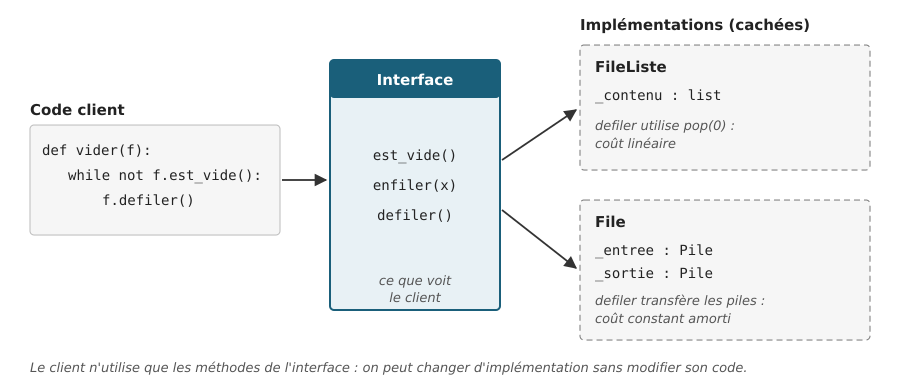

Vocabulaire de la programmation objet⚓︎
Programme officiel — Structures de données
Contenus : vocabulaire de la programmation objet : classes, attributs, méthodes, objets.
Capacités attendues : écrire la définition d'une classe ; accéder aux attributs et méthodes d'une classe.
Commentaire : on n'aborde pas ici tous les aspects de la programmation objet comme le polymorphisme et l'héritage.
Au chapitre précédent, on a implémenté des piles et des files avec des fonctions et des listes Python. Ce chapitre présente une autre manière de programmer, la programmation objet, et montre qu'elle permet d'implémenter ces mêmes structures de façon plus lisible et plus sûre.
Ce qui gênait au chapitre précédent⚓︎
Rappelons l'implémentation de la pile bornée du chapitre IV :
1 2 3 4 5 6 7 | |
Cette implémentation est correcte, mais elle présente plusieurs défauts.
- Une donnée anonyme. La case
p[0]joue le rôle de compteur et d'indice du sommet. Rien dans son nom ne l'indique: il faut une explication pour comprendrep[p[0]] = x. - Aucune protection. Pour Python,
pn'est qu'une liste. Rien n'empêche d'écrirep[0] = 42par erreur, ni d'appelerdefiler(p)sur une pile. - Des données et des traitements séparés. La liste d'un côté, les fonctions de l'autre.
- Des conflits de noms. Les deux implémentations de la pile définissaient chacune une fonction
creer_pile. Elles ne pouvaient pas coexister dans un même programme: il fallait réexécuter l'une pour « effacer » l'autre.
La programmation objet répond à ces quatre problèmes : elle permet de regrouper dans une même entité des données nommées et les traitements qui s'y appliquent.
En Python, tout est objet⚓︎
Même si le terme n'a jamais été véritablement expliqué, on utilise des objets depuis la classe de première. La fonction type révèle la classe d'une valeur :
1 2 3 4 5 6 | |
On a aussi déjà utilisé des méthodes: dans la première implémentation de la pile, p.append(x) et p.pop() sont des méthodes de la classe list. La notation objet.méthode(...) est donc familière.
La nouveauté, est que l'on peut créer nos propres classes.
Une première classe : la carte à jouer⚓︎
Définir une classe⚓︎
Définition — Classe
Important
Une classe définit un nouveau type de données. Elle décrit:
- les attributs : les données que possédera chaque objet de ce type (son état) ;
- les méthodes : les opérations que l'on pourra effectuer sur ces objets (son comportement).
Une classe est comparable à un plan de fabrication: le plan n'est pas l'objet, mais il permet d'en fabriquer autant qu'on veut.
Une carte à jouer est caractérisée par une valeur (de 2 à 14, l'As valant 14) et une couleur (♠, ♥, ♦ ou ♣).
1 2 3 4 5 6 7 8 | |
On retiendra:
Important
- le mot-clé
class, suivi du nom de la classe (par convention avec une majuscule), puis:; - une docstring qui documente la classe, comme pour les fonctions;
- une méthode particulière,
__init__, détaillée plus loin.
Créer des objets: l'instanciation⚓︎
Pour fabriquer un objet, on appelle la classe comme une fonction, avec les arguments attendus par __init__ (sauf self) :
1 2 | |
Définitions — Instance, instanciation
Important
La création d'un objet à partir d'une classe s'appelle l'instanciation. L'objet obtenu est une instance de la classe.
c1 et c2 sont deux instances distinctes de la classe Carte. Notre classe est bien devenue un type, au même titre que str ou list :
1 2 | |

À faire : copier la classe et les deux instanciations dans Python Tutor. On voit apparaître la classe, puis deux objets distincts, chacun avec ses propres valeur et couleur.
Création et initialisation : __init__ et self⚓︎
L'instruction Carte(12, '♥') déclenche deux étapes, toutes deux automatiques :
- la création de l'objet : Python fabrique un nouvel objet de type
Carte, encore sans attributs (c'est le rôle d'une méthode spéciale,__new__, qu'on n'écrit jamais en NSI) ; - l'initialisation de cet objet : Python appelle
__init__en lui transmettant l'objet tout juste créé, dans le paramètreself, ainsi que les arguments fournis.
__init__ ne crée donc pas l'objet : il le reçoit déjà créé et lui donne ses attributs. C'est pourquoi __init__ ne contient jamais de return.
On peut le vérifier en affichant self au début de __init__ :
1 2 3 4 5 | |
1 2 3 4 | |
L'adresse est la même : l'objet existait déjà avant l'exécution de la première ligne de __init__.
L'instruction self.valeur = valeur signifie alors : « crée dans cet objet un attribut nommé valeur et donne-lui la valeur du paramètre valeur ». Attention, les deux valeur sont différents : celui de droite est un paramètre, variable locale qui disparaît à la fin de __init__ ; celui de gauche est un attribut, qui vit aussi longtemps que l'objet.
Vocabulaire — « constructeur »
L'équivalent de
creer_pile()au chapitre IV, c'est l'appelCarte(...)tout entier : il crée et initialise, puis renvoie l'objet.Dans l'usage courant, et dans de nombreux sujets de bac, on appelle souvent
__init__le « constructeur » de la classe. C'est un abus de langage qu'il faut savoir reconnaître : quand un énoncé parle du constructeur, il désigne la méthode__init__que vous devez écrire. Le terme exact pour__init__est méthode d'initialisation.
Accéder aux attributs⚓︎
On accède à un attribut avec la notation pointée objet.attribut :
1 2 3 4 | |
Définition — Attribut
Important
Un attribut est une variable rattachée à un objet. Chaque instance possède ses propres attributs (on parle d'attributs d'instance).
Les méthodes⚓︎
Pour savoir si une carte est supérieure à une autre, on pourrait écrire c1.valeur > c2.valeur partout dans le programme. Mais c'est à la classe de définir les opérations qui ont du sens pour ses objets : c'est le rôle des méthodes.
1 2 3 4 5 6 7 8 9 10 11 12 | |
1 2 3 4 | |
Définition — Méthode
Important
Une méthode est une fonction définie à l'intérieur d'une classe. Son premier paramètre, self, désigne l'objet sur lequel elle est appelée.
L'appel c2.est_plus_forte_que(c1) est en réalité un raccourci pour :
1 | |
c2 est transmis automatiquement au paramètre self, et c1 au paramètre autre. C'est pourquoi on n'écrit jamais self lors de l'appel, mais toujours lors de la définition.
On peut remarquer aussi qu'une méthode peut recevoir en paramètre un autre objet de la même classe : ici, autre est une carte, dont on lit l'attribut valeur.
Erreur classique : oublier self.
1 2 3 | |
L'appel c1.est_rouge() provoque :
1 | |
Le message s'explique : Python a bien transmis un argument (l'objet c1), mais la méthode n'en attendait aucun.
Remarque : le nom self est une convention universellement respectée, mais ce n'est pas un mot-clé du langage. Ce paramètre pourrait porter un autre nom ; on ne le fait jamais.
Objets et références : attention aux effets de bord⚓︎
Une variable ne contient pas un objet : elle référence un objet. C'était déjà le cas avec les tableaux (listes python) en première.
1 2 3 4 5 | |
Il n'y a qu'un seul objet, désigné par deux noms. Le modifier via c2, c'est donc aussi le modifier « via » c1. C'est un effet de bord, cause typique de bugs (voir le chapitre Mise au point des programmes).
1 2 3 4 5 | |

c1 et c3 représentent toutes deux un Roi de cœur, et pourtant c1 == c3 vaut False. Pour une classe que nous écrivons nous-mêmes, == compare par défaut l'identité des objets (s'agit-il du même objet en mémoire ?) et non leur contenu. Pour comparer deux cartes, on comparera explicitement leurs attributs, ou on écrira une méthode dédiée (voir exercice).
Retour aux piles et aux files⚓︎
On dispose maintenant de tout le vocabulaire nécessaire pour réécrire les structures du chapitre IV, en les implémentant avec des classes.
La classe Pile⚓︎
1 2 3 4 5 6 7 8 9 10 11 12 13 14 15 16 17 18 19 | |
Comparons avec le chapitre IV :
| Chapitre IV (fonctions) | Chapitre V (objet) |
|---|---|
p = creer_pile() |
p = Pile() |
empiler(p, 10) |
p.empiler(10) |
depiler(p) |
p.depiler() |
sommet(p) |
p.sommet() |
est_pile_vide(p) |
p.est_vide() |
La pile n'est plus passée en paramètre : elle devient l'objet sur lequel on appelle la méthode, et elle est reçue dans self.
Interface et convention du souligné.
L'interface de la pile, ce sont ses méthodes est_vide, empiler, depiler et sommet : c'est tout ce que l'utilisateur de la classe a besoin de connaître. L'attribut _contenu relève de l'implémentation. Le souligné initial est une convention Python qui signifie « attribut interne, ne pas l'utiliser depuis l'extérieur de la classe ». Python n'interdit pas techniquement d'écrire p._contenu, mais un programmeur qui respecte la convention ne le fera pas. On retrouve la distinction interface / implémentation du chapitre IV.
Deux classes pour la file⚓︎
Première implémentation : une liste Python.
1 2 3 4 5 6 7 8 9 10 11 12 13 14 15 | |
Comme au chapitre IV, defiler a un coût linéaire, car pop(0) oblige Python à décaler tous les éléments.
Seconde implémentation : deux piles.
Au chapitre IV, cette file était un tuple (entree, sortie). Ici, les attributs d'une file sont eux-mêmes des objets de la classe Pile :
1 2 3 4 5 6 7 8 9 10 11 12 13 14 15 16 17 18 19 | |
Le schéma ci-dessous montre les objets en mémoire après quelques opérations. On y voit que f référence un objet File, dont chaque attribut référence à son tour un objet Pile, lequel référence une liste.

La classe File n'utilise que l'interface de Pile : elle n'accède jamais à _contenu. Si l'on changeait l'implémentation de Pile, la classe File continuerait de fonctionner sans aucune modification.
Une même interface, deux implémentations⚓︎
Les classes FileListe et File coexistent sans conflit de noms, alors que leurs méthodes portent les mêmes noms : chaque méthode appartient à sa classe. Mieux, un même programme peut utiliser l'une ou l'autre indifféremment :
1 2 3 4 5 6 7 8 9 10 11 12 13 | |
1 2 | |

La fonction vider ne sait pas, et n'a pas besoin de savoir, comment la file est représentée en mémoire. Le comportement observé est identique ; seuls diffèrent la représentation interne et le coût des opérations (linéaire pour FileListe.defiler, constant amorti pour File.defiler). C'est l'idée de type abstrait du chapitre IV qui prend ici une forme concrète.
Méthodes spéciales (pour aller plus loin)⚓︎
Les méthodes dont le nom commence et se termine par un double souligné (__init__, __str__…) sont des méthodes spéciales : Python les appelle automatiquement dans certaines situations. Seule __init__ est indispensable en NSI ; les autres ne sont pas exigibles mais apparaissent parfois dans les sujets.
Par défaut, afficher une carte n'est pas très lisible :
1 2 | |
La méthode __str__, appelée automatiquement par print, permet de choisir l'affichage. On l'ajoute à la classe Carte :
1 2 3 4 5 | |
1 2 | |
Bilan⚓︎
| Terme | Définition | Exemple |
|---|---|---|
| Classe | Définition d'un nouveau type : attributs et méthodes communs à ses objets | class Carte: |
| Objet / instance | Valeur construite à partir d'une classe | c1 |
| Instanciation | Création d'un objet en appelant la classe | c1 = Carte(12, '♥') |
| Méthode d'initialisation | __init__, appelée automatiquement juste après la création de l'objet pour lui donner ses attributs (souvent appelée « constructeur » par abus de langage) |
def __init__(self, valeur, couleur): |
| Attribut | Variable propre à chaque objet | c1.valeur |
| Méthode | Fonction définie dans la classe, appelée sur un objet | c2.est_plus_forte_que(c1) |
self |
Premier paramètre de toute méthode : l'objet sur lequel elle est appelée | self.valeur |
| Interface | Méthodes offertes à l'utilisateur de la classe | empiler, depiler… |
À retenir.
Important
- Une classe regroupe des données nommées (attributs) et les traitements qui s'y appliquent (méthodes).
- La programmation objet est un moyen naturel d'implémenter une structure de données : l'interface correspond aux méthodes, l'implémentation aux attributs internes.
- Une variable référence un objet : deux variables peuvent désigner le même objet.